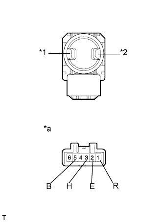
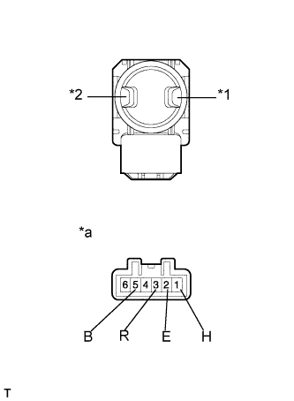

ПЕРЕКЛЮЧАТЕЛЬ ОПОРЫ ПОЯСНИЦЫ (для моделей с электроприводами сидений) > ПРОВЕРКА |
| 1. ПРОВЕРЬТЕ ПЕРЕКЛЮЧАТЕЛЬ ЭЛЕКТРОПРИВОДА ОПОРЫ ПОЯСНИЦЫ В СБОРЕ (для моделей с левосторонним рулевым управлением) |
|  |
Измерьте сопротивление в соответствии со значениями, приведенными в таблице ниже.
| Контакты для подключения диагностического прибора | Положение переключателя | Заданные условия |
| 3 (H) - 5 (B) | Удерживайте | Менее 1 Ом |
| 1 (R) - 2 (E) | ||
| 2 (E) - 3 (H) | Выкл | |
| 2 (E) - 1 (R) | ||
| 2 (E) - 3 (H) | Отпустите | |
| 1(R) - 5(B) |
| *1 | Удерживайте переключатель |
| *2 | Отпустите переключатель |
| *a | Устройство с неподсоединенным жгутом проводов (переключатель электропривода опоры поясницы) |
| 2. ПРОВЕРЬТЕ ПЕРЕКЛЮЧАТЕЛЬ ЭЛЕКТРОПРИВОДА ОПОРЫ ПОЯСНИЦЫ В СБОРЕ (для моделей с правосторонним рулевым управлением) |
|  |
Измерьте сопротивление в соответствии со значениями, приведенными в таблице ниже.
| Контакты для подключения диагностического прибора | Положение переключателя | Заданные условия |
| 1 (H) - 5 (B) | Удерживайте | Менее 1 Ом |
| 3 (R) - 2 (E) | ||
| 1 (H) - 2 (E) | Выкл | |
| 3 (R) - 2 (E) | ||
| 1 (H) - 2 (E) | Отпустите | |
| 3 (R) - 5 (B) |
| *1 | Удерживайте переключатель |
| *2 | Отпустите переключатель |
| *a | Устройство с неподсоединенным жгутом проводов (переключатель электропривода опоры поясницы) |